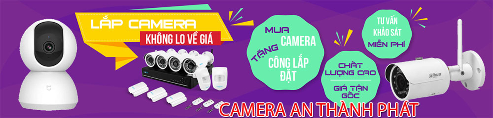

KHÁCH HÀNG LẮP CAMERA QUAN SÁT QUẬN BÌNH TÂN
- Khách Lắp Camera Chú Phong Địa điểm lăp đặt camera 14/6 đường số 2, khu phố 6, Bình Hưng Hòa A, Bình Tân Sử dụng Dịch vụ camera quan sát 1 đầu ghi KX-7104SD6, 2 Cam KX-2112C4, 2 Cam 2111C4, ổ cứng 1TB
- Khách Lắp Camera quan sát Anh phúc Địa điểm lăp đặt camera 482/25/13/10 tỉnh lộ 10. Phường bình trị đông. Bình tân Sử dụng Dịch vụ camera quan sát Đầu ghi kx-7104sd6 ổ cứng 500gb,3 camera dome. 1 camera thân
- Khách Lắp Camera Khách sạn Hoàng Hương Địa điểm lăp đặt camera 37 đường số 8 KDC Vĩnh Lộc B, Phường Bình Hưng Hoà, Quận Bình Tân Sử dụng Dịch vụ camera quan sát 1 Cam KX-1004C4
- Lắp Camera quan sát Quận Bình Tân CHỊ trâm Địa điểm lăp đặt camera 49 đường 14 bình hưng hòa A, Quận Bình Tân Sử dụng Dịch vụ camera quan sát 1 camera kw-h2
- Camera Quan Sát Anh Trung tại Địa Chỉ lăp đặt camera 71/16 kênh nước đen , p BHHA , bình tân Sử dụng Dịch vụ camera quan sát 01 đầu ghi ds-7204 04 cam thân ds-2ce556dot 01 500GB
- Khách Lắp Camera Địa điểm lăp đặt camera 64 đường số 5, bình trị đông , bình tân( khu tên lửa) Sử dụng Dịch vụ camera quan sát 3 camera thân 2.0 1 con kxh13pwn dau ghi 4 kx7104td6 hdd 250
- Lắp Camera Quan Sát Anh Dũng Địa chỉ lăp đặt camera 128/17 đường số 1, P. bình hưng hoà, Q. Bình Tân Sử dụng Dịch vụ camera quan sát 1 đầu ghi KX-7104SD6, 3 cam KX-2112C4, 1 cam KX-2111C4, Ổ cứng 1TB
- Khách Lắp Camera Địa điểm lăp đặt camera 32/47 Duong So 5, Binh Hung Hoa, Binh Tan Sử dụng Dịch vụ camera quan sát ban 1 dau ghi kx-7104sd6
- Lắp Camera Chú Tư Địa điểm lăp đặt camera 195 đường 26, P. Bình trị đông, Q. Bình Tân Sử dụng Dịch vụ camera quan sát 1 cam yoosee
- Địa chỉ lăp đặt camera 46 Đường số 2, P. An Lạc A, Bình Tân (G19 Cư xá Phú Lâm C mở rộng) Sử dụng Dịch vụ camera quan sát 1 đầu ghi DS-7208HGHI-F1 -- 1 Ổ CỨNG 1TB--3 CAMERA DOME DS-2CE76D3T-ITMF--- 3 CAMERA THÂN DS-2CE16D3T-ITF--- 1 CAMERA IP DS-2CD2423RO-IW
- Khách Lắp Camera anh bình Địa điểm lăp đặt camera 265 tân kì tân quý, q. bình tân Sử dụng Dịch vụ camera quan sát 2 camera ip kb( kx-2012N2 , kx-2011N2), 1 cục swicht 5port
- Khách Lắp Camera Địa chỉ lăp đặt camera 212/37A đường chiến lược, p. bình trị đông, q. bình tân Sử dụng Dịch vụ camera quan sát 2 camera kx-H13PWN , 2 thẻ nhớ 32G
- Lắp Camera Quan Sát Anh Bửu Địa điểm lăp đặt camera 19 đường số 18B ,p.Bình Hưng Hòa A, Bình Tân Sử dụng Dịch vụ camera quan sát 1 đầu ghi KX-7104SD6 , 3 thân KX-2111C4 ,1 dome ổ cứng 1T
- Khách Lắp Camera Chi Ly Địa điểm lăp đặt camera TM17 chung cu morning, duong so 4, p. an lac, q. binh tan Sử dụng Dịch vụ camera quan sát 1 dau ghi 4kb(kx-7104sd6), 2 camera kb(kx-2112c4,kx-2012c4), o cung 250G
- Lắp Camera Chị Lâm Hồng vũ Địa điểm lăp đặt camera 8 đường 17, P an lạc, Q bình tân Sử dụng Dịch vụ camera quan sát mua về tự lắp đặt, thẻ nhớ 32GB
- Khách Lắp Camera Anh hoàng Địa điểm lăp đặt camera 28/48 đường số 18 .p bình hưng hòa .Quận Bình Tân Sử dụng Dịch vụ camera quan sát 1đầu ghi kx-7104sd6 --- 1 ổ cứng 250g-- 1 camera kx-2111c4-- 1 camerA kx-2112c4
- Dịch Vụ Lắp Camera Chị Huỳnh Lê Ngọc Lý Địa điểm lăp đặt camera 348A Nguyễn Thị Tú, Q. Bình Tân Sử dụng Dịch vụ camera quan sát 4 cam KX-2112C4
- Khách Lắp Camera Anh Trường Địa điểm lăp đặt camera 352/9b lê văn quới, bình tân Sử dụng Dịch vụ camera quan sát mua tên miền
- Lắp Camera Địa điểm lăp đặt camera 83 đường số 10,BHH,Bình tân Sử dụng Dịch vụ camera quan sát 7108SD6,4 CAM KX2112C4,1 CAM 2111C4,Ổ CỨNG 1t
- Khách Lắp Camera Thái Thị Thuận Địa điểm lăp đặt camera 173/33 Phạm Phú Thứ , P11 , Q Bình Tân Sử dụng Dịch vụ camera quan sát 2 camera KX-2112C4, 1 camera KX-2111C4 , 1 đầu ghi KX-7104SD6 ,1 HDD 1T
